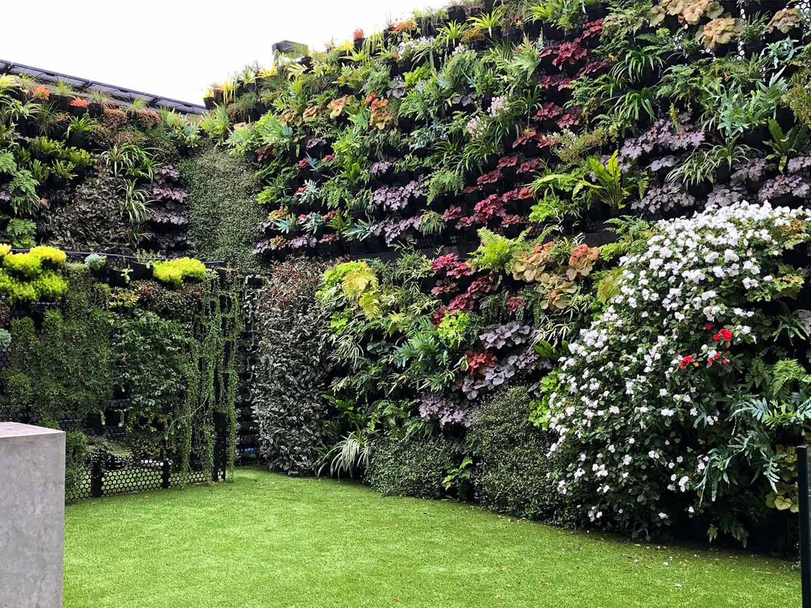
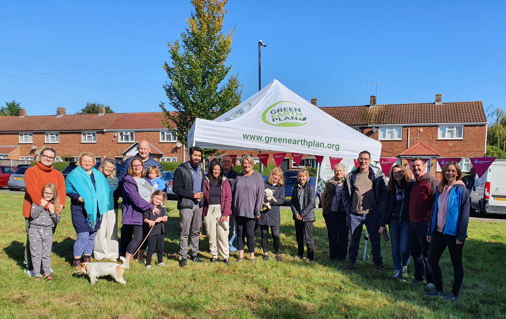
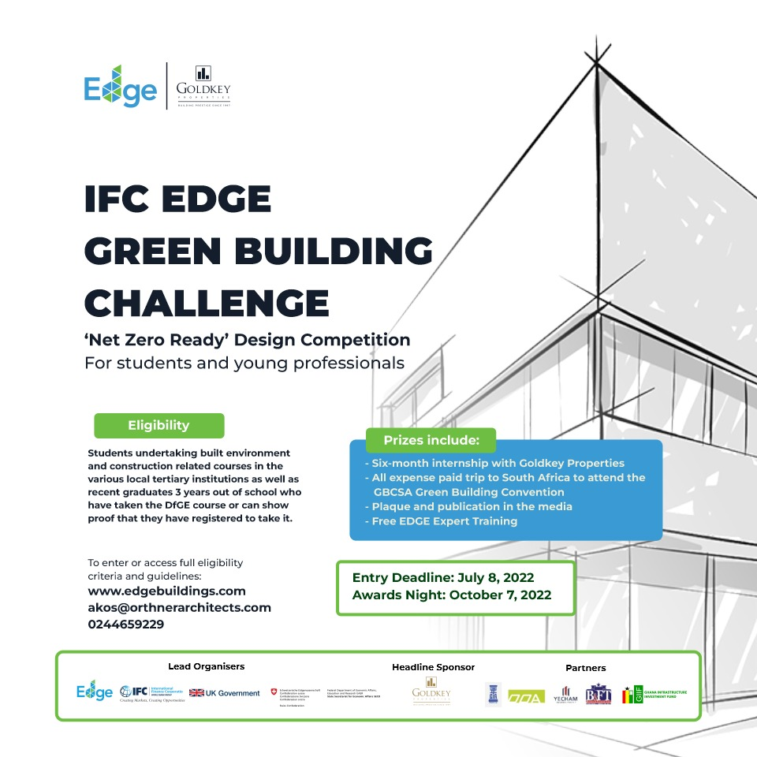

About Us
ECO-BLUEPRINTS is a student-led advocacy committed to integrating greenery into building designs. Our mission is to inspire future professionals to embrace eco-friendly practices.
Our Projects
Project 1: Green Roof Installation on Campus

Partnering with Western Mindanao State University (WMSU) to install a green roof on campus buildings like the College of Engineering and College of Liberal Arts. This project showcases how green roofs reduce energy costs and promote biodiversity.
Project 2: Vertical Garden Demonstration
Creating a vertical garden on the prominent wall of the University Library building on Campus A. This project demonstrates practical benefits such as improving air quality and insulation.
Project 3: Community Urban Greening Campaign
Launching a campaign to plant trees, shrubs, and small gardens in schools or public parks, such as Zamboanga Peninsula Polytechnic State University (ZPPSU). This encourages sustainable gardening practices to enhance green cover in neighborhoods.
Project 4: Green Building Design Competition
Organizing a design competition for students in Civil Engineering, Architecture, and Environmental Engineering to innovate building designs incorporating greenery.
Project 5: Educational Workshops on Green Infrastructure

Hosting workshops and seminars focusing on the importance of incorporating greenery into infrastructure, with expert-led sessions on materials and long-term environmental benefits.
Project 6: Sustainable Garden Installation

Setting up a sustainable garden or community urban farm where local residents can grow their food using eco-friendly practices like composting and rainwater collection.
Contact Us
Email: micokleinldelosreyes@gmail.com
Phone: +63 992 503 0710
Facebook: Mico Delos Reyes